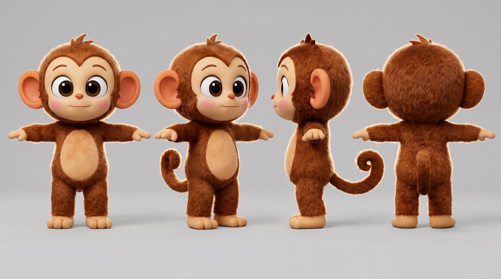

😨
O que é o medo?
O medo aparece diante do que é novo, do escuro, de um barulho alto, ou de uma situação que parece grande demais. Ele não é covardia: é o meu corpo tentando me proteger.
Como o meu corpo fica
😨 Coração disparado
🥶 Mãos geladas ou tremendo
Vontade de fugir ou congelar
😶 Voz que some
😣 Barriga embrulhada
Quando eu percebo esses sinais, já sei: o medo chegou. E tudo bem.
O Kaco também sente

O que eu posso fazer
- ✋Seguro a mão de quem cuida de mim.
- 🗣️Falo o que sinto em voz alta, pra alguém.
- 🐢Vou bem devagar, no meu ritmo.
- 🤝Lembro que eu não estou sozinho.
- 🧠Penso: "será que é tão grande quanto parece?"
Vamos respirar com o Kaco 🐒
Siga a bolinha: enche o ar devagar e solta devagar.
respira…
Ter medo é normal, todo mundo tem. Coragem não é não sentir medo: é dar um passinho mesmo sentindo. 💜
← Voltar pras Emoções